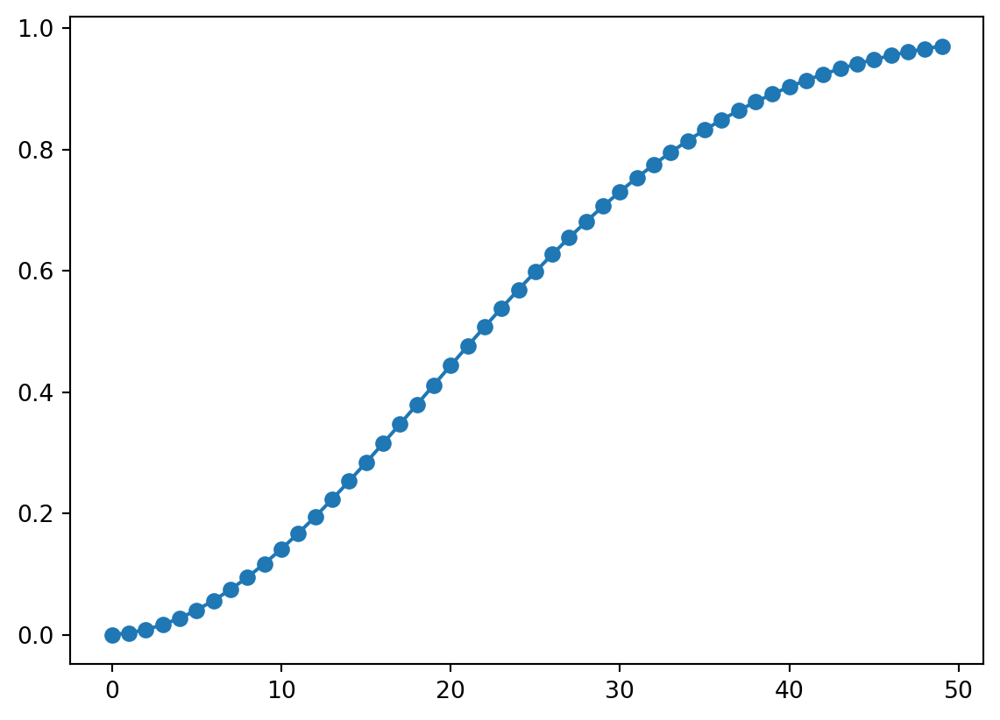

コード
t = 1
for x in range(10):
t = t * (365 - x) / 365
print(t)1.0
0.9972602739726028
0.9917958341152185
0.9836440875334497
0.9728644263002063
0.9595375163508884
0.9437642969040244
0.9256647076483308
0.905376166110833
0.88305182228892212024年6月11日
教室にいる40人の人の中に同じ誕生日の人がいる確率を考える. 感覚的には同じ誕生日の人はあまりいないように思える. しかし、同じ誕生日の人がいる確率を計算すると80％を超えるのである.
クラスの中に同じ人がいる事象を\(A\) とすると、同じ人がいる確率は\(P(A)\)である。\(A^c\) は同じ人がいない事象であり、\(P(A^c)\) を求める。
\(n\)人いるとすると,
\[\begin{align*} &P(A^c) = \frac{365 \times 364 \times 363 \times \cdots \times (365 - n + 1)}{365^n} \\ &1 - P(A^c) = 1 - \frac{365 \times 364 \times 363 \times \cdots \times (365 - n + 1)}{365^n} \end{align*}\]
よって\(n=40\) の時、\(P(A)=0.89\) となる.
\(t\)が0~10の時,誕生日が同じ人がいない確率をpythonで求める.
1.0
0.9972602739726028
0.9917958341152185
0.9836440875334497
0.9728644263002063
0.9595375163508884
0.9437642969040244
0.9256647076483308
0.905376166110833
0.8830518222889221\(t\)が0~10の時,誕生日が同じ人がいる確率は,以下で求めることができる.
1人の時 0.0
2人の時 0.002739726027397249
3人の時 0.008204165884781456
4人の時 0.016355912466550326
5人の時 0.02713557369979369
6人の時 0.04046248364911165
7人の時 0.05623570309597559
8人の時 0.07433529235166925
9人の時 0.09462383388916695
10人の時 0.1169481777110779誕生日が同じ人がいる確率を関数にします.
教科書でわかった通り,約0.89であることがコードからもわかります.
では,人数が増えるにつれどのように確率が変化するかをmatplotlibを使って図で示します.

すると,50人にもなるとほぼ確率が1であることが図からわかります.つまり,50人もいれば同じ誕生日の人はだいたいいる計算になります.
数学的帰納法で示す。
\(n=2\) のときには
\[\begin{equation*} P(A_1 \cup A_2) = P(A_1) + P(A_2) - P(A_1 \cap A_2) \leq P(A_1) + P(A_2) \end{equation*}\]
となり，成立つことがわかる。
\(n\) のとき成立つと仮定すると \(P(\bigcup_{i=1}^n A_i) \leq \sum_{i=1}^n P(A_i)\) が成立つ。
そのとき \(n+1\) の時に成り立つ事を示す。
\[\begin{align*} P(\bigcup_{i=1}^{n+1} A_i) &= P((\bigcup_{i=1}^n A_i) \cup A_{n+1}) \\ &\leq P(\bigcup_{i=1}^n A_i) + P(A_{n+1}) \\ &\leq \sum_{i=1}^n P(A_i) + P(A_{n+1}) \\ &= \sum_{i=1}^{n+1} P(A_i) \end{align*}\]
となり，\(n+1\) のときにも成立つことがわかる。
\[\begin{equation*} P(A \cap B) = P(A) + P(B) - P(A \cup B) \geq P(A) + P(B) - 1 \end{equation*}\]
---
title: "6月11日「データ解析のための数理統計入門」第1章 例1.2, 問5"
format: html
code-fold: true
date: 2024/06/11
toc: true
lang: ja
categories:
- ゼミ
- 統計
- データ解析のための数理統計入門
- python
status: "完了"
---
## 例1.2 誕生日問題
### 誕生日問題とは
教室にいる40人の人の中に同じ誕生日の人がいる確率を考える.
感覚的には同じ誕生日の人はあまりいないように思える.
しかし、同じ誕生日の人がいる確率を計算すると80％を超えるのである.
### 誕生日問題の確率を計算する
クラスの中に同じ人がいる事象を$A$ とすると、同じ人がいる確率は$P(A)$である。$A^c$ は同じ人がいない事象であり、$P(A^c)$ を求める。
$n$人いるとすると,
\begin{align*}
&P(A^c) = \frac{365 \times 364 \times 363 \times \cdots \times (365 - n + 1)}{365^n} \\
&1 - P(A^c) = 1 - \frac{365 \times 364 \times 363 \times \cdots \times (365 - n + 1)}{365^n}
\end{align*}
よって$n=40$ の時、$P(A)=0.89$ となる.
### 例題1.2 誕生日問題 python
$t$が0~10の時,誕生日が同じ人がいない確率をpythonで求める.
```{python}
t = 1
for x in range(10):
t = t * (365 - x) / 365
print(t)
```
$t$が0~10の時,誕生日が同じ人がいる確率は,以下で求めることができる.
```{python}
t = 1
for x in range(10):
t = t * (365 - x) / 365
print(f'{x+1}人の時 {1-t}')
```
誕生日が同じ人がいる確率を関数にします.
```{python}
def exit_birthday(n):
t = 1
for x in range(n):
t = t * (365 - x) / 365
if x == n-1:
print(1-t)
```
```{python}
exit_birthday(40)
```
教科書でわかった通り,約0.89であることがコードからもわかります.
では,人数が増えるにつれどのように確率が変化するかをmatplotlibを使って図で示します.
```{python}
import matplotlib.pyplot as plt
def exit_birthday_plot(n):
t = 1
values = []
for x in range(n):
t = t * (365 - x) / 365
values.append(1-t)
plt.plot(range(n), values, 'o-', label='Probability')
plt.savefig('2.png')
plt.show()
exit_birthday_plot(50)
```
すると,50人にもなるとほぼ確率が1であることが図からわかります.つまり,50人もいれば同じ誕生日の人はだいたいいる計算になります.
## 問題5 以下の不等式を示せ
1. $P(\bigcup_{i=1}^n A_i) \leq \sum_{i=1}^n P(A_i)$
2. $P(A \cap B) \geq P(A) + P(B) - 1$
### 1. $P(\bigcup_{i=1}^n A_i) \leq \sum_{i=1}^n P(A_i)$
数学的帰納法で示す。
$n=2$ のときには
\begin{equation*}
P(A_1 \cup A_2) = P(A_1) + P(A_2) - P(A_1 \cap A_2) \leq P(A_1) + P(A_2)
\end{equation*}
となり，成立つことがわかる。
$n$ のとき成立つと仮定すると $P(\bigcup_{i=1}^n A_i) \leq \sum_{i=1}^n P(A_i)$ が成立つ。
そのとき $n+1$ の時に成り立つ事を示す。
\begin{align*}
P(\bigcup_{i=1}^{n+1} A_i) &= P((\bigcup_{i=1}^n A_i) \cup A_{n+1}) \\
&\leq P(\bigcup_{i=1}^n A_i) + P(A_{n+1}) \\
&\leq \sum_{i=1}^n P(A_i) + P(A_{n+1}) \\
&= \sum_{i=1}^{n+1} P(A_i)
\end{align*}
となり，$n+1$ のときにも成立つことがわかる。
### 2. $P(A \cap B) \geq P(A) + P(B) - 1$
\begin{equation*}
P(A \cap B) = P(A) + P(B) - P(A \cup B) \geq P(A) + P(B) - 1
\end{equation*}